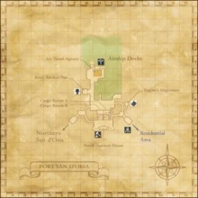

Description
Port San d'Oria is a city area in San d'Oria.
Map

Involved in Quests / Missions
| Quest / Mission | Type | Starter | Location |
|---|---|---|---|
| A Discerning Eye | General | Eddy | Port San d'Oria (H-6) |
| A Job for the Consortium | General | Portaure | Port San d'Oria (H-9) |
| A Taste For Meat | General | Antreneau | Port San d'Oria (G-7) |
| Chasing Quotas | DRG AF2 | Ceraulian | Port San d'Oria (I-10) |
| The Dismayed Customer | General | Gulemont | Port San d'Oria (G-7) |
| Flyers for Regine | General | Regine | Port San d'Oria (J-8) |
| Lufet's Lake Salt | General | Nogelle | Port San d'Oria (G-7) |
| Lure of the Wildcat (San d'Oria) | General | Amutiyaal | Southern San d'Oria (L-6) |
| Mirror, Mirror | Fellow | Luto Mewrilah | Upper Jeuno (G-8) |
| Over the Hills and Far Away | Map | Antreneau | Port San d'Oria (G-7) |
| The Brugaire Consortium | General | Fontoumant | Port San d'Oria (H-9) |
| The Competition | General | Joulet | Port San d'Oria (H-8) |
| The Holy Crest | Job: Dragoon | Arminibit | Port San d'Oria (I-9) |
| The Pickpocket | General | Miene | Port San d'Oria (I-8) |
| The Rivalry | General | Gallijaux | Port San d'Oria (H-8) |
| Thick Shells | General | Vounebariont | Port San d'Oria (I-10) |
NPCs
| Name | Location | Type |
|---|---|---|
| Albinie | (H - 6) | NPC Merchant |
| Altiret | (I - 8) | NPC Quest Giver |
| Anoki | (H - 6) | — |
| Answald | (J - 10) | NPC |
| Anton | (H - 6) | — |
| Antreneau | (G - 7) | NPC Quest Giver |
| Apstaule | (H - 10) | — |
| Arminibit | (I - 9) | NPC Quest Giver |
| Artinien | (H - 8) | — |
| Auvare | (H - 6) | NPC |
| Avandale | (F - 10) | — |
| Bellue | (I - 9) | — |
| Bonarpant | (H - 9) | — |
| Bonmaurieut | (H - 10) | NPC Merchant |
| Bricorsant | (H - 8) | — |
| Brifalien | (H - 8) | — |
| Callort | (I - 8) | — |
| Ceraulian | (I - 10) | — |
| Cherlodeau | (H - 8) | — |
| Comittie | (H - 10) | — |
| Coribalgeant | (J - 9) | — |
| Coullave | (F - 10) | — |
| Crilde | (G - 9) | — |
| Croumangue | (G - 7) | NPC Merchant |
| Dabbio | (H - 9) | — |
| Deguerendars | (G - 8) | NPC |
| Diraulate | (J - 8) | — |
| Eaugouint | (I - 8) | — |
| Eddy | (H - 6) | NPC Quest Giver |
| Farmaoquaix | (G - 6) | NPC Special Event Coordinator |
| Fiva | (G - 6) | NPC Merchant |
| Fontoumant | (H - 9) | NPC Quest Giver |
| Gallijaux | (H - 8) | NPC Quest Giver |
| Gournaie | (I - 10) | — |
| Gulemont | (G - 7) | NPC Quest Giver |
| Ilgusin | (G - 7) | — |
| H.A.R.P. Envoy | (J - 10) | — |
| Jaireto | (I - 8) | — |
| Joulet | (H - 8) | NPC Quest Giver |
| Laucimercen | (F - 9) | — |
| Leonora | (H - 6) | — |
| Liloune | (G - 7) | — |
| Louis | (H - 6) | — |
| Marquie | (F - 9) | — |
| Maunadolace | (H - 10) | — |
| Meinemelle | (H - 10) | — |
| Meta | (H - 6) | — |
| Meuxtajean | (J - 9) | — |
| Miene | (I - 8) | NPC |
| Milva | (H - 7) | NPC Merchant |
| Nazar | (H - 5) | — |
| Nimia | (G - 8) | NPC Merchant |
| Nogelle | (G - 7) | NPC Quest Giver |
| Noquerelle | (J - 9) | — |
| Parcarin | (H - 10) | — |
| Patolle | (G - 9) | NPC Merchant |
| Perdiouvilet | (G - 7) | — |
| Phersula | (J - 10) | — |
| Pomilla | (H - 8) | — |
| Portaure | (H - 9) | NPC Quest Giver |
| Prietta | (H - 9) | NPC |
| Ramiene | (H - 8) | Chocobo Racing Associate |
| Regine | (J - 8) | NPC Merchant |
| Rielle | (G - 9) | — |
| Rugiette | (J - 8) | NPC Merchant |
| Sheridan | (H - 10) | — |
| Solgierte | (H - 10) | — |
| Teilsa | (I - 8) | — |
| Thierride | (G - 7) | NPC |
| Ufanne | (H - 8) | — |
| Vendavoq | (H - 9) | NPC Merchant |
| Vounebariont | (I - 10) | NPC Quest Giver |
Story walkthroughs in this area
| Story | Mission / quest |
|---|---|
| CoP 5-1 | The Enduring Tumult of War |
| CoP 5-3U | Where Messengers Gather — Ulmia’s Path |
| WotG 41-1-1 | Her Memories: Old Bean |
References
External references describe their own server or retail rules. Documented Zenith changes take precedence.
Map credits: Map 1 — HorizonXI Wiki. Original game maps © SQUARE ENIX; redrawn maps retain the credited authorship and license.

Additional level-75 reference
|
The port of the Kingdom of San d'Oria is a relatively sparse district of town, compared the other districts. The airships provide passenger access to Jeuno and also allow for steady stream of goods to come in and out of the Kingdom, as evidenced by the large cargo rooms. A single shop and single tavern also also found here, along with the North Auction House.
Connecting Areas |
 |

Quests Started Here
| Quest | Type | NPC | Pos. | Fame | Reward | Available? |
| A Discerning Eye | General | Eddy | H-6 | 1 | 500 gil | |
| A Taste For Meat | General | Antreneau | G-7 | 1 | Grilled Hare and 150 gil | Check |
| Flyers for Regine | General | Regine | J-8 | 1 | 440 gil | Check |
| Lufet's Lake Salt | General | Nogelle | G-7 | 1 | 600 gil | Check |
| The Brugaire Consortium | General | Fontoumant | H-9 | 1 | Lauan Shield | Check |
| The Dismayed Customer | General | Gulemont | G-7 | 1 | 560 gil | Check |
| The Pickpocket | General | Miene | I-8 | 1 | Light Axe | Check |
| The Rivalry | General | Gallijaux | H-8 | 1 | Lu Shang's Fishing Rod | Check |
| The Competition | General | Joulet | H-8 | 1 | Lu Shang's Fishing Rod | Check |
| Thick Shells | General | Vounebariont | I-10 | 2 | 500 gil | Check |
| A Job for the Consortium | General | Portaure | H-9 | 5 | 1000 gil | |
| The Holy Crest | DRG Flag | Arminibit | I-9 | --- | Dragoon unlocked | Check |
| Over the Hills and Far Away | Map | Antreneau | G-7 | 8 | Map of the Uleguerand Range | Check |
| Chasing Quotas | DRG AF2 | Ceraulian | I-10 | --- | Drachen Brais | Check |

Fishing
| All Watersides | Cap |
|---|---|
| 7 | |
| 11 | |
| 27 | |
| 31 | |
| 56 | |
| 0 | |
| 0 | |
| 0 |
NPCs Found Here
|
|
Adapted from Eden Wiki: Port San d'Oria · Contributors and history · CC BY-SA 4.0. Revision 45601. Layout, links and optional background text adapted for Zenith.